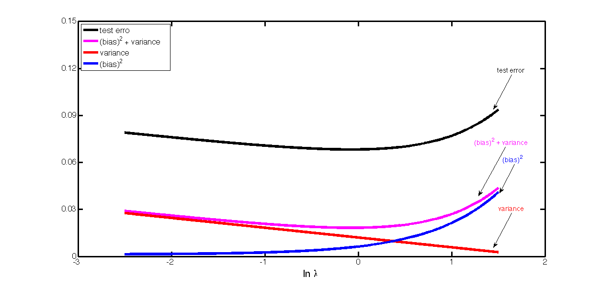

Visualization of error versus amount of regularization
Contents
Ficticious bias,variance,error functions
varFN = @(lambda) 0.012 -(0.025/4)*lambda;
biasFN = @(lambda)((2.5.^(1.5*lambda-2.5))/20)+ 0.0012;
biasvarFN = @(lambda) varFN(lambda) + biasFN(lambda);
testerrorFN = @(lambda) biasvarFN(lambda) + 0.05;
domain = -2.5:0.01:1.5;
lineSpec = {'LineWidth',5};
plot(domain,testerrorFN(domain),'-k',lineSpec{:});hold on;
plot(domain,biasvarFN(domain),'-m',lineSpec{:});
plot(domain,varFN(domain),'-r',lineSpec{:});
plot(domain,biasFN(domain),'-b',lineSpec{:});
set(gca,'XTick' ,-3:2,...
'YTick' ,0:0.03:0.15,...
'XLim' ,[-3,2],...
'YLim' ,[0,0.15],...
'LineWidth',3,...
'FontSize' ,16,...
'box' ,'on');
legend('test error' ,...
'(bias)^2 + variance',...
'variance' ,...
'(bias)^2' ,...
'Location','NorthWest');
font = {'fontSize',14};
if(true)
annotation(gcf,'textarrow',[0.85,0.82],[0.74,0.62],...
'String' ,{'test error'},font{:},...
'TextColor','k');
annotation(gcf,'textarrow',[0.84,0.795],[0.49 0.32],...
'String' ,{'(bias)^2 + variance'},font{:},...
'TextColor','m');
annotation(gcf,'textarrow',[0.85,0.82],[0.26,0.14],...
'String' ,{'variance'},font{:},...
'TextColor','r');
annotation(gcf,'textarrow',[0.855,0.83],[0.43 0.33],...
'String' ,{'(bias)^2'},font{:},...
'TextColor','b');
end
xlabel('ln \lambda','FontSize',20);
maximizeFigure;
